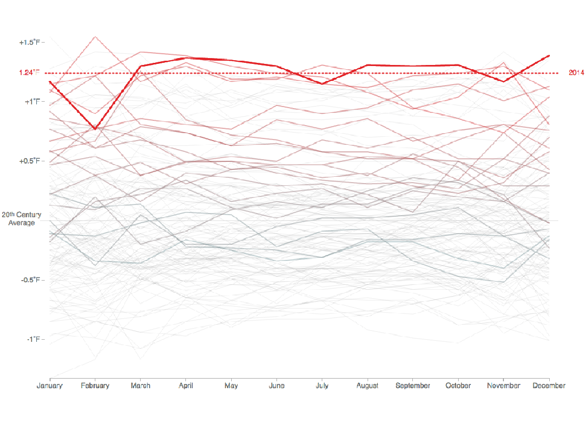
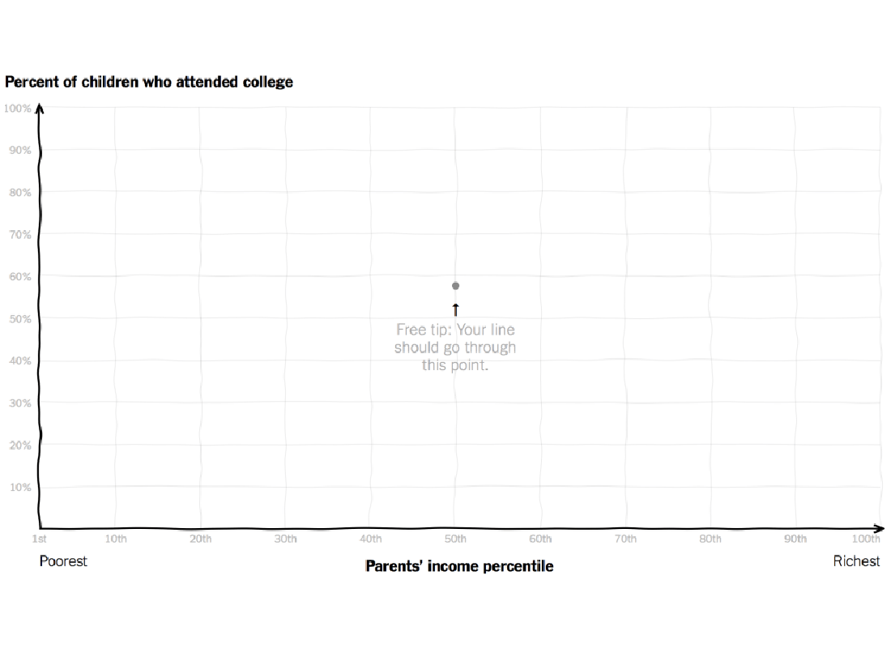
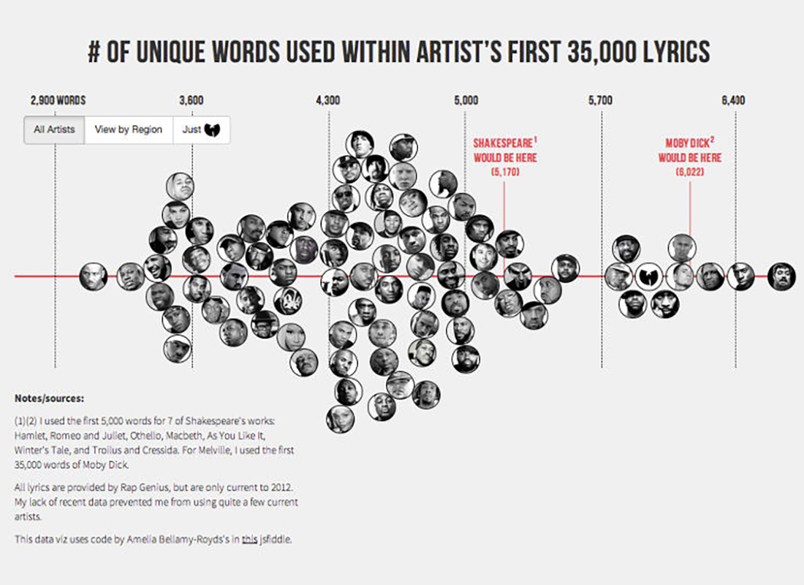

Audio Landscape is a novel music visualizer that constructs a landscape based on the MP3 that you give it. As you fly overhead, you can see the mountains constructed in the distance.
Data-Driven Documents, or D3.js, is a flexible JavaScript library that lets you draw and move things in the browser. If it isn’t yet, it’s on its way to becoming the tool of choice for visualization on the web. The library isn’t just for charts, graphs, and maps. Case-in-point is John Firebaugh’s new project to make one animated art piece a day.
Every day at 8am and 8pm, Truth & Quantity by Gregor Hochmuth transcribes NPR’s hourly news update using speech recognition & natural language analysis. It then selects all plural nouns from the news script and generates two compilations: one for each month (going back to 2009) and another for various quantities, such as all instances of “7” or “100 million.”
A fun one from Interactive Things shows cover songs with a galaxy metaphor. The panorama view shows the 50 top songs as individual planetary systems with the original work as the sun. Each planet represents a version of the song and it’s appearance indicates characteristics including genre, popularity, tempo, valence, energy, and speechiness. The radius of its orbit around the sun shows the years between the publication dates. This view allows you to compare the structure and density of the constellation of different songs from a high-level perspective.

The animated chart by Tom Randall and Blacki Migliozzi for Bloomberg shows average monthly temperature. Each line represents a full calendar year, and as you get closer to present-day the line that represents record highs inches upwards. When you look at overall global temperatures over time, you see a rising line and new heat records set.
Each year is overlaid on top of the other with a new time series in each frame. The dotted line rises too as new records are set, and as time passes, the older time series lines fade to the background.

Compare your curve to reality for income versus college attendance Those who grow up in poorer families are less likely to go to college, and those who grow up in richer families are more likely. The question is: How much does the likelihood of college attendance increase as family income increases? Gregor Aisch, Amanda Cox, and Kevin Quealy for the Upshot ask you this question. Draw a curve on a blank chart, and then compare your guess to reality and other readers’ guesses.
A release from Martin Wattenberg and Fernanda Viegas shows live wind patterns, based on data from the National Digital Forecast Database. It’s beautiful to look at.
The most impressive bit is that, despite all of the animation, it’s interactive. Roll over flows for wind speed and direction as well as zoom (with a double click) and pan to your area of interest.
Josh Stevens, a PhD candidate at Penn State, mapped 92 years of sasquatch sightings, based on data from the Bigfoot Field Researchers Organization.
At first glance, it looks a lot like a map of population distribution. After all, you would expect sightings to be the most frequent in areas where there are a lot of people. But a bivariate view of the data shows a very different story. There are distinct regions where sightings are incredibly common, despite a very sparse population. On the other hand, in some of the most densely populated areas sasquatch sightings are exceedingly rare.

Matt Daniels wrote a post comparing the vocabulary of popular hip-hop artists, comparing each artist first 35,000 lyrics.
This was genius- combining hip-hop and nerdy stats. But being a big fan of Aesop Rock, it was disappointing that he wasn’t originally included in the stats, and then when he was, he wasn’t given due respect, showing a to-scale graph- highlighting his overall awesomness.
So- here is the graph duplicated, with the scale adjusted, to show how Aes really blows everyone else off the charts.